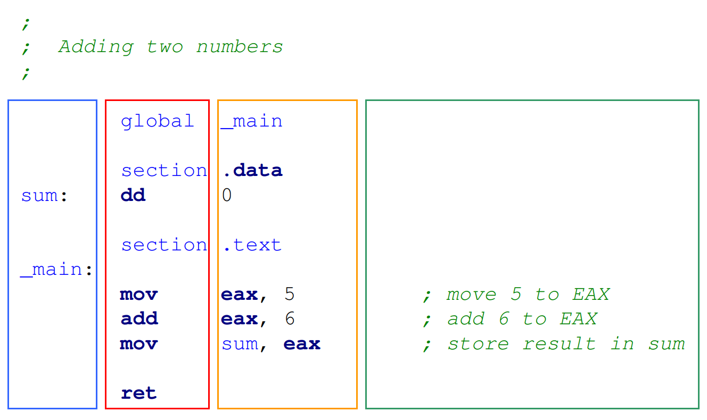
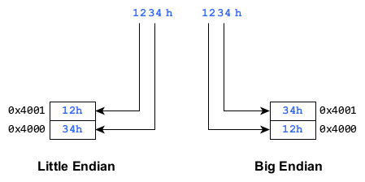
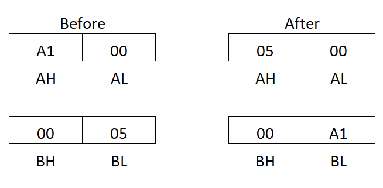
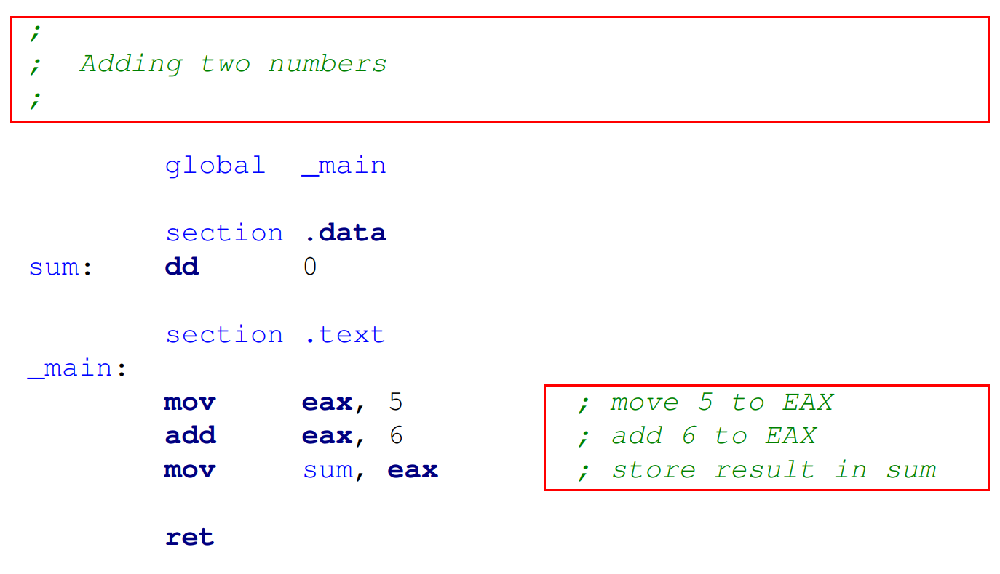

CS404: Assembly Language
Let us consider the following program:
An assembly program consists of statements:
By default, assembly is not case-sensitive
Statement format:
[label:] instruction [operand(s)] [;comment]
The layout of source lines
section directive:
.data: Initialized data items.bss: Uninitialized data items.text: Actual machine instructionsReserved words are NOT case sensitive
[{+|-}] digits [radix]
Radix can be: - h (hexadecimal) - o or q (octal) - d (decimal) - b (binary)
| Integer constants | Base |
|---|---|
198 |
decimal |
0200 |
decimal |
-2d |
decimal |
+101b |
binary |
1100_0001b |
binary |
107o |
octal |
107q |
still octal (more readable) |
23bh |
hexadecimal |
23Bh |
hexadecimal |
0ah |
hexadecimal |
0xC8 |
hexadecimal (C syntax) |
| Character/String Literal | Value in Hex |
|---|---|
'm' |
6Dh |
"School" |
53h, 63h, 68h, 6Fh, 6Fh, 5Ch |
"Joe" |
4Ah, 6Fh, 65h |
"A Bank." |
41h, 30h, 42h, 61h, 6Eh, 6Bh, 2Eh |
"Joe's" |
4Ah, 6Fh, 65h, 27h, 73h |
| Size | Type | Bits |
|---|---|---|
| Byte | BYTE or HWORD | 8 bits |
| Word | WORD | 16 bits |
| Double word | DWORD | 32 bits |
| Quad word | QWORD | 64 bits |
| Ten-Byte | TBYTE or TWORD | 80 bits |
| Double-quad word | OWORD or DQWORD | 128 bits |
| Quad-quad word | YWORD | 256 bits |
| 32-Word | ZWORD | 512 bits |
Syntax:

Endianness comparison
x86 microprocessors follow Little Endianness
Syntax:
Examples:
Syntax:
Examples:
Syntax:
Examples:
Usage:
Supported operators:
| Operator | Name | Precedence |
|---|---|---|
() |
Parentheses | 1 |
+, -, ~, ! |
Unary operators | 2 |
*, /, //, %, %% |
Multiplicative | 3 |
+, - |
Addition and subtraction | 4 |
<<, >> |
Shift operators | 5 |
& |
Bitwise AND | 6 |
^ |
Bitwise XOR | 7 |
\| |
Bitwise OR | 8 |
$: Current location counter$$: Section locationExample:
| Operand | Description |
|---|---|
| reg | Any general-purpose register |
| reg8 | 8-bit general-purpose register |
| reg16 | 16-bit general-purpose register |
| reg32 | 32-bit general-purpose register |
| sreg | 16-bit segment register |
| imm | 8-, 16-, or 32-bit immediate value |
| mem | 8-, 16-, or 32-bit memory operand |
Operand refers to specific offset within data segment
MOV, XCHG, MOVSX, MOVZXPUSH, POP, PUSHA, POPA, PUSHAD, POPADCBW, CWD, CDQ, CWDESyntax:
Rules:
Example:
Single MOV cannot move directly between memory locations
Memory to memory transfer
Move with sign-extension for signed integers
Variants:
Example:
Move with zero-extension for unsigned integers
Syntax:
Rules:
Formats:
What is the value of AX and BX after executing:

XCHG operation
CS Assembly Language | Lecture 2
{kind=link}
Comments
;and end with newline